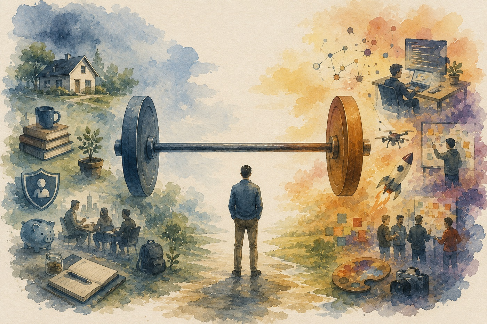

L’intelligence artificielle dispose d’une amplitude suffisamment large qu’elle pourrait avoir un impact sur notre monde de l’ordre de celui de la machine à vapeur, l’électricité ou Internet à leurs époques respectives. Il s’agit d’une technologie à usage général, de celles qui changent la manière dont nos sociétés évoluent et fonctionnent concrètement. En termes statistiques, les études récentes montrent que les effets de l’IA pourraient être de l’ordre de 7% de croissance du PIB mondial sur 10 ans (Goldman Sachs, 2023), comparé à la machine à vapeur qui avait atteint une croissance d’environ 3% sur sa décennie la plus productive (McKinsey, 2018). Pour l’instant, les projections concernant l’IA sont encore un vaste sujet sur lequel de nombreux analystes et autres spécialistes peinent à faire la part des choses et y voir clair. La particularité de cette technologie réside sur deux facteurs importants. Elle combine une certaine rareté du fait de son besoin croissant et exponentiel en énergie et ressources rares, tout en proposant une accessibilité massive à l’un des facteurs de production le moins substituable : l’intelligence.
Travail, compétences et “co‑intelligence”
Les rôles clés joués par les individus au sein des organisations vont certainement changer radicalement au cours des dix prochaines années et au-delà. La valeur va se rediriger de l’exécution vers le jugement et l’orchestration. Il s’agit de passer d’une logique de tâches répétitives et exécutables vers une réflexion et un travail sur le système et la manière d’obtenir les résultats auparavant produits par le travail. Les compétences émotionnelles et interpersonnelles, la prise de décision et la confiance vont être des valeurs d’autant plus importantes à l’avenir. Ce ne seront plus les managers et autres cadres supérieurs qui devront faire valoir ces traits de personnalité, mais l’ensemble des collaborateurs qui devront structurer et s’approprier le travail d’agents ou de workflows dopés à l’IA.
L’auteur Ethan Mollick, dans son ouvrage Co-Intelligence, nous expliquait déjà en 2024 qu’il fallait se précipiter pour “systématiquement inviter l’IA à la table”, afin de créer une sorte de co-intelligence avec celle-ci et d’éviter de la voir comme une menace ou un simple outil. Il propose l’analogie avec le centaure et le cyborg : en commençant par travailler comme un “centaure”, en fournissant des tâches qu’il est facilement possible de revérifier et challenger, vous allez naturellement commencer à intégrer une logique de complémentarité avec la technologie, c’est à partir de là que vous deviendrez “cyborg”, et développerez une vraie co-intelligence avec celle-ci. Il est cependant primordial de bien comprendre la place de l’humain dans cette relation avec la technologie. Plus vite nous avancerons vers ce paradigme, plus l’expertise humaine deviendra valorisable et nécessaire, aussi paradoxale que cela puisse paraître. Les tâches les plus complexes qui vont être prises en charge par l’IA nécessiteront l’expertise suffisante pour les intégrer correctement dans les workflows, mais aussi de vérifier leur conformité à la sortie, et si nécessaire d’ajuster la mécanique du système dans son ensemble.
Les implications de l’IA dans les organisations et pour les employés sont ambivalentes : d’un côté nous allons constater un nivellement vers le haut du fait de l’amélioration des performances individuelles, de l’autre côté la technologie va également intensifier le travail et le périmètre des postes. Par ailleurs, étant donné que les connaissances purement théoriques ou techniques vont devenir une commodité, le recrutement et les décisions en termes de ressources humaines vont certainement aussi évoluer, rendant le marché du travail beaucoup plus incertain.
Un article récent de HBR mentionne la tendance au “workload creep” associée à l’intégration de l’IA dans le quotidien de nombreux employés, qui se sentent finalement dépassés par la charge de travail que leur “nouvelle productivité” leur impose. Les employés absorbent un volume de travail qui aurait auparavant justifié un collaborateur supplémentaire, ou encore des managers (produit, ingénieur…) qui se lancent dans du codage ou du prototypage, alors qu’ils s’adressaient auparavant à leurs confrères du département concerné pour réaliser de telles tâches. L’aspect conversationnel et souvent très professionnel de l’IA rend les interactions naturelles et cela peut donner l’impression de dépasser le cadre d’une tâche ou de la charge de travail supplémentaire, à tort. L’auteur rappelle l’importance des rapports sociaux en entreprise et de la force qui réside dans ceux-là, en termes de créativité et de sens à donner au travail, là où l’IA neutralise et individualise totalement cette logique.
Antifragilité individuelle à l’ère de l’IA
Dans un monde qui va certainement être marqué par une volatilité croissante (organisations, travail, société…), il convient de se préparer pour mieux anticiper le changement afin de se placer dans des configurations qui nous préparent pour travailler, échanger et évoluer dans de tels environnements. Dans son ouvrage Antifragile, Nassim Taleb formalise une notion intemporelle et auto-descriptive : l’antifragilité est un état dans lequel la volatilité et les chocs viennent renforcer la substance, là où le fragile cède et le robuste résiste sans évoluer. L’un des outils central associé à la notion d’antifragilité est celui d’optionnalité : selon Taleb, elle permet de bénéficier de l’aspect positif de l’incertitude, sans risquer les côtés négatifs de celle-ci. Le besoin de connaissances ou de compétences n’est pas strictement nécessaire, il suffit de faire preuve de sagesse et de discernement pour éviter les erreurs et saisir les options les plus favorables, en fonction du risque associé. L’optionnalité appliquée à l’ère de l’IA correspond à multiplier les expériences avec la technologie, quelles qu’elles soient (projets, workflows, etc), éviter les paris massifs et coûteux vers une seule plateforme/fournisseur ou en donnant un seul rôle à l’IA, mais également orienter sa trajectoire personnelle vers des compétences complémentaires à l’IA (réflexion systémique, stratégie…) plutôt que substituables (tâches routinières, analyse et traitement de données…).
Une autre notion introduite par Nassim Taleb est celle de l’approche “barbell”, qui résume plutôt une posture face à l’optionalité. Il prend l’analogie de l’haltère (barre de musculation), sur laquelle on vient disposer des poids de chaque côté : il s’agit d’une représentation visuelle de deux extrêmes séparés par un espace neutre au milieu. Cela traduit une situation dans laquelle on dispose de deux options, l’une plutôt risquée et l’autre suffisamment sécurisée. Concrètement, le côté sécurisé permet de protéger les bases (épargne financière, compétences, réseau et connexion sociales, etc) lorsque le côté offensif concentre la prise de risques (multiplication d’expériences, investissement, side-projects, etc). Appliqué à l’IA et au travail, la partie sécuritaire doit permettre de maintenir un cercle de compétences clés et non substituables, d’assurer un matelas financier minimal ou un point de chute professionnel de dernier recours, lorsque la partie offensive doit permettre de multiplier les expérimentations avec les outils/technologies, lancer des projets multiples et trouver des opportunités fortes mais potentiellement risquées ou incertaines. Cette démarche va devenir d’autant plus importante à l’ère de l’IA que l’environnement dans lequel se développe la technologie évolue à un rythme exponentiel. Pour rappel, l’annonce du lancement de ChatGPT a eu lieu en novembre 2022, il y a seulement 3 ans, et c’est déjà plus de 15% de la population mondiale qui utilise l’IA en 2025 (AI Adoption 2025, Microsoft).
L’antifragilité appliquée aux organisations
A l’échelle des organisations, la logique diffère selon le spectre que l’on utilise. Les systèmes peuvent être antifragiles au niveau macro tout en sacrifiant certains des éléments qui les composent au niveau micro. Tout comme un organisme qui renouvelle constamment ses cellules, l’auteur montre que les organisations doivent être fragiles et exposées afin d’assurer que l’environnement dans son ensemble soit antifragile. Il prend l’exemple du secteur de la restauration, en expliquant que ces établissements sont par défaut fragiles, car ils sont tous concurrents, mais que le maillage de l’ensemble d’entre eux est quant à lui antifragile pour cette même raison. C’est précisément ce qui implique que nous puissions bénéficier de restaurants de qualité variée, que certains ne survivent pas à cette concurrence, mais que l’ensemble évolue positivement, en se renforçant avec le temps.
Ceci admet que de nombreuses entreprises, métiers voire même produits vont disparaître ou être disruptés par les technologies associées à l’IA, mais que l’écosystème dans sa globalité deviendra certainement plus résilient et innovant tout en offrant de nouvelles opportunités. Nous retrouvons ici la logique d’optionnalité qui admet que si les individus et l’environnement s’y préparent, tout individu peut s’adapter, et cela fut déjà le cas dans l’histoire passée, bien que le rythme soit particulièrement effréné dans le cadre de cette nouvelle technologie. Inversement, certains systèmes sont parfois hyper-fragiles, dans la mesure où ils sont interconnectés, parfois dépendants et sophistiqués (le secteur bancaire, avec les crises que l’on a connues notamment). Une étude comme celle de Citrini Research sur l’avenir de l’IA (The 2028 Global Intelligence Crisis) admet que de nombreuses entreprises vont certainement compresser le capital humain par une spirale de remplacement associée à cette technologie : l’IA devient moins chère et plus efficace, ceci conduit à des licenciements, permettant de libérer de la trésorerie, ce qui permet de faire croitre les capacités IA, et ainsi de suite… Cette théorie n’est pas applicable sans réserves, mais cela risque malgré tout de créer des changements réels dans la manière de valoriser le capital humain. Aujourd’hui, il est difficile de faire la différence entre l’adoption réellement constatée en entreprise et ce qui se produit en laboratoire de recherche, notamment sur des tâches très spécifiques. La friction réside également dans les limites de certaines tâches : cadre légal, intégration complexe, coûts de transferts et autres limites empêchent dans l’immédiat d’intégrer structurellement l’IA au quotidien en entreprise.
L’optionalité s’insère dans ce contexte qui présente pour l’instant une part de doute. Les facteurs clés d’une adoption moins fragile de l’IA dans les organisations réside dans le leadership qui supporte la mise en place de l’IA à tous les niveaux, des collaborateurs de première ligne aux niveaux hiérarchiques plus élevés, tout en s’assurant de laisser une certaine liberté dans le choix de l’outil et des fonctionnalités dont chacun à besoin. Par ailleurs, il faut que la culture d’entreprise soit permissive sur le volet IA, en laissant une part d’utilisation de la technologie qui ne soit pas soumise à évaluation ou une pression du résultat. Ethan Mollick (Co-Intelligence) ajoute que les organisations disposent d’une fenêtre relativement courte à moyen terme afin d’intégrer un maximum de collaborateurs dans l’agenda du déploiement IA, avant que cela ne devienne un critère de recrutement strictement reconnu et évalué, ce qui créera certainement des disparités ou conflits internes si cela est mal anticipé.
Futur du travail et scénarios envisagés
Au regard de tout ceci, il est possible de dessiner deux scénarios présentant des trajectoires différentes pour l’avenir de l’IA et de ses enjeux, un exercice auquel beaucoup d’analystes et auteurs se sont déjà prêtés. Les points de vue (forcément vulgarisés) peuvent paraître très antagonistes, mais rappelez-vous, la théorie “barbell” nous conseille de garder de l’optionnalité en disposant de deux points de vue suffisamment distincts pour ne pas tomber dans l’immobilisme.
Le scénario orienté optimisme propose une IA qui compresse un siècle de progrès scientifique en une décennie, crée une société d’abondance et reconfigure profondément le travail et notre rapport à celui-ci. Certains piliers du secteur (dont Sam Altman, co-fondateur de OpenAI) ont toujours soutenu l’idée que l’IA pourrait nous porter vers une situation telle que le revenu universel et l’abondance matérielle pourrait devenir réalité. Cela impliquerait de nouvelles métriques pour évaluer la productivité et la croissance, tout en changeant complètement les logiques actuelles d’état-social et de vie en société (taxes et impôts, sécurité sociale, travail…).
Le scénario plutôt pessimiste s’orienterait notamment sur un déplacement massif de l’intelligence, celle-ci devenant une réelle commodité pour l’ensemble de la hiérarchie au travail, alimentant une spirale de substitution aux machines et à la technologie, aux limites difficilement mesurables. Je laisserai des auteurs disposant de plus d’imagination que moi prédire des scénarios hypothétiques pour l’avenir (voir The 2028 Global Crisis Intelligence ou AI 2027), mais il est certain qu’une bonne dose de pessimisme sera potentiellement associée à la rupture qui va avoir lieu dans les dix à quinze prochaines années.
Dans les deux cas, se positionner dans une posture antifragile nécessitera de relocaliser les compétences clés vers le jugement, l’orchestration et des valeurs émotionnelles fortes et purement humaines, tout en espérant que les gouvernements s’adaptent et proposent des politiques publiques qui amortissent les chocs à venir (évolution de l’éducation, du rapport au travail, financement de l’état-social…), et enfin en comptant sur la population et le discernement de chacun pour conserver de l’optionnalité lorsque l’on se confronte à l’IA, afin de peser sur sa trajectoire plutôt que de la subir…